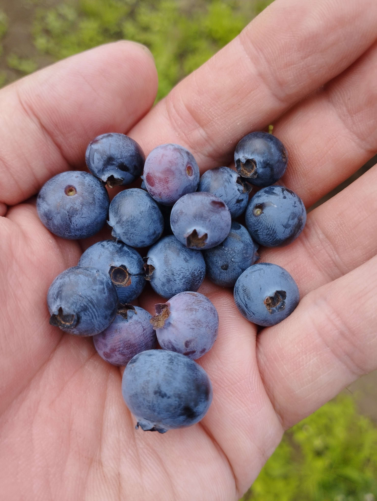
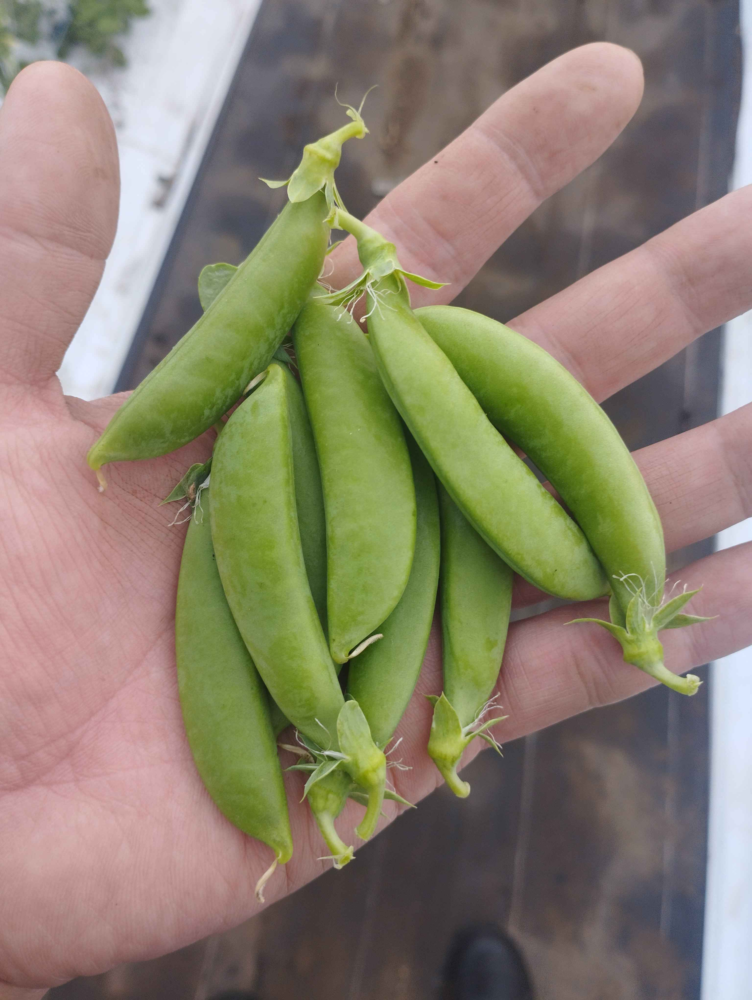
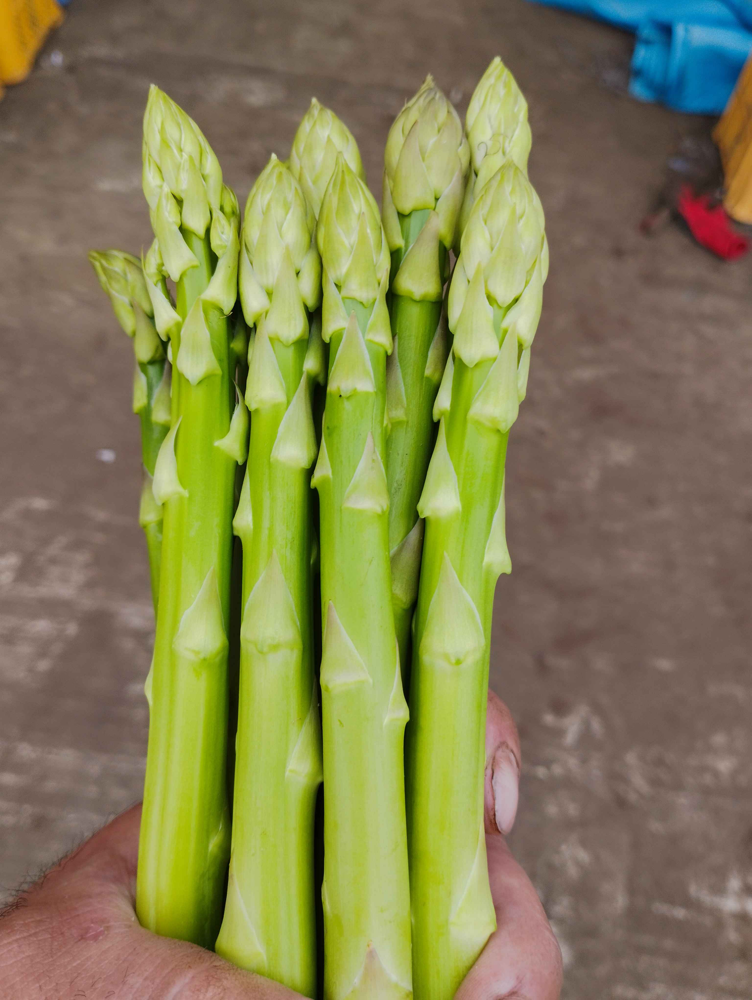
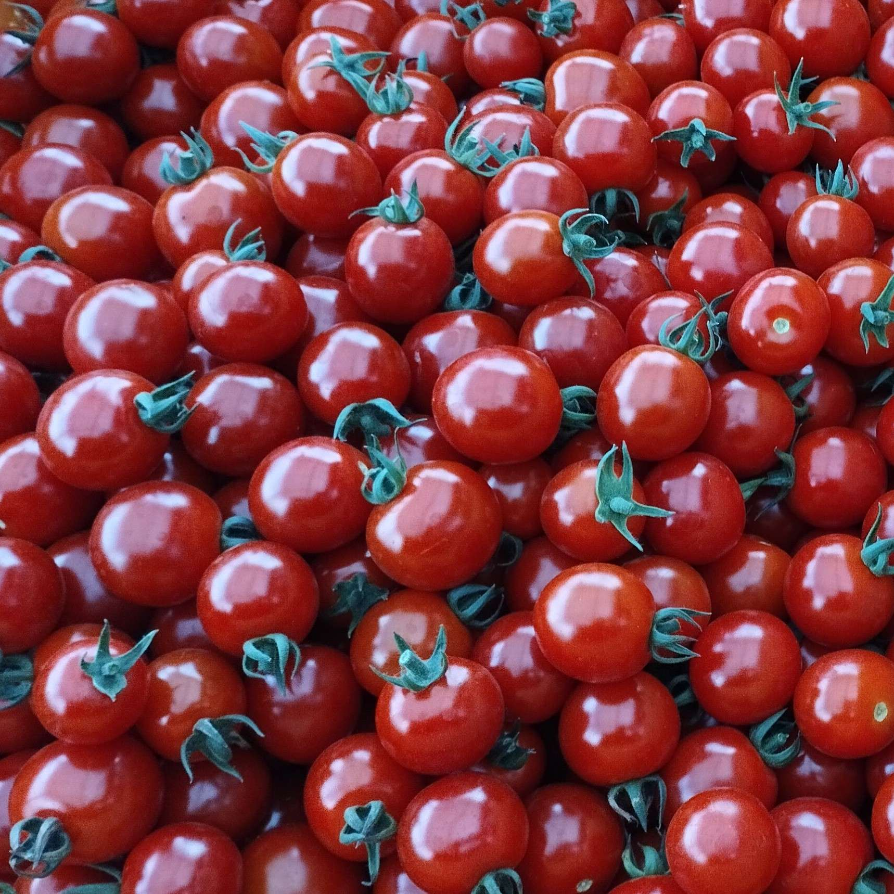
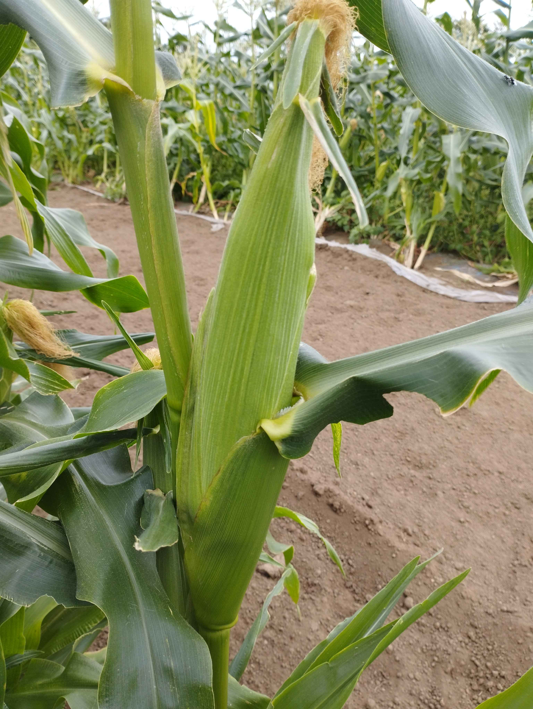
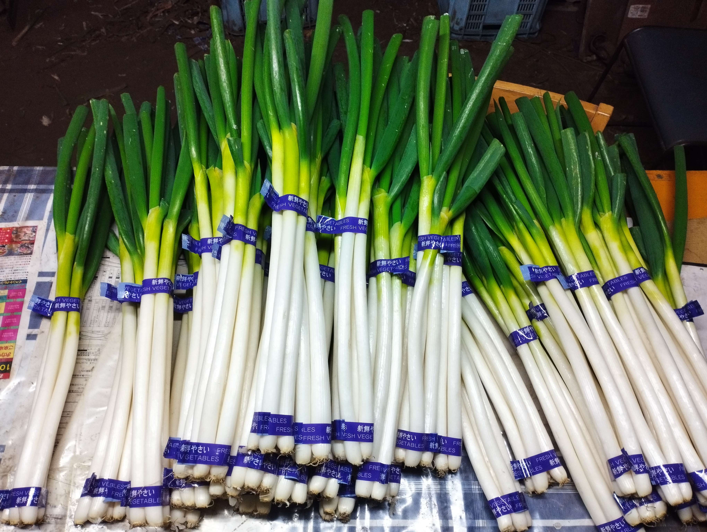

はまちゃん農園の野菜
大分県竹田市荻町は日本百名山“祖母山”の麓に位置します。 この地域は竹田湧水群が日本名水百選に選ばれるほど豊かな自然と清らかな水に恵まれた場所です。 標高約500メートルの高地に位置し、昼夜の寒暖差が大きいことで、作物に独特の甘みと香りが引き出されます。 祖母山の自然の恵みと湧水の力で育てた、こだわりの野菜をぜひ御賞味ください。






オンラインショップ: はまちゃんショップへ
お知らせ
2024年7月13日: ホームページをリニューアルしました！
2024年7月1日: 夏野菜の収穫が始まりました。
2024年6月15日: 新しいオンラインショップがオープンしました。
2024年6月1日: はまちゃん農園のブログを始めました。